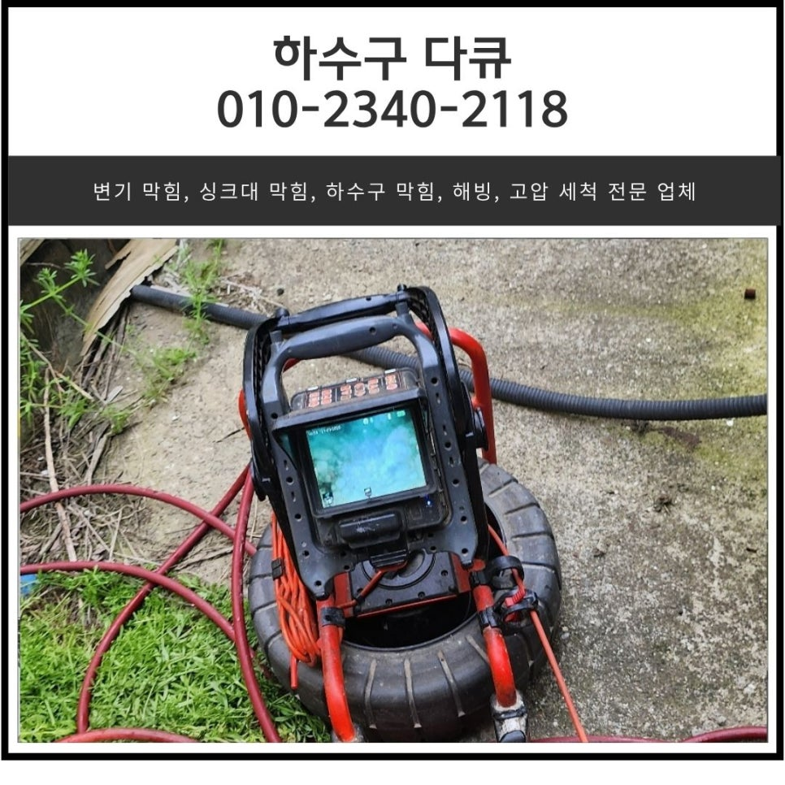
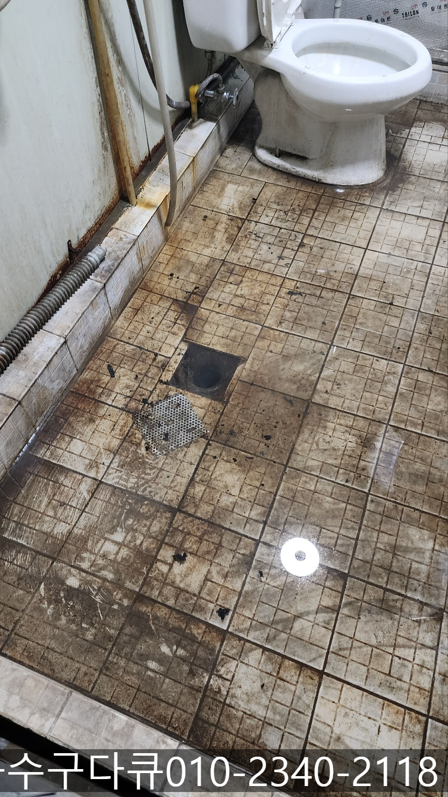
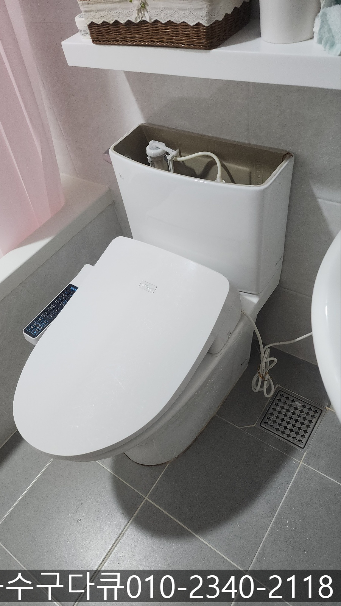
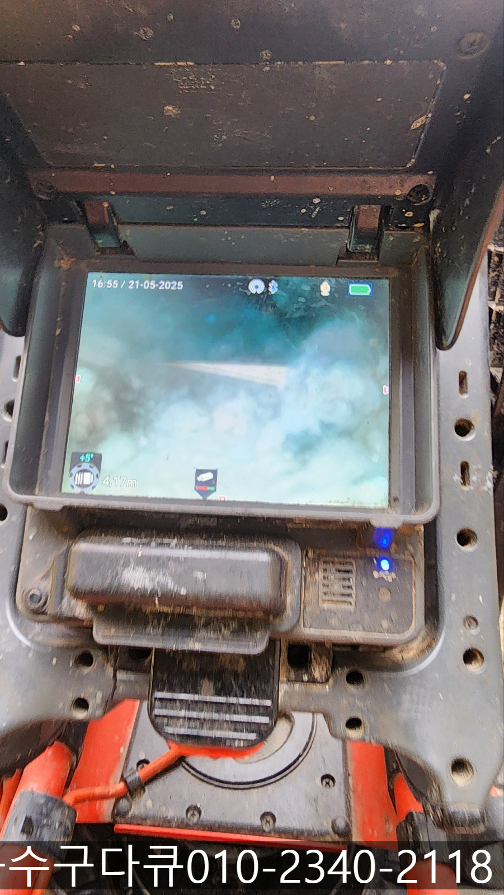
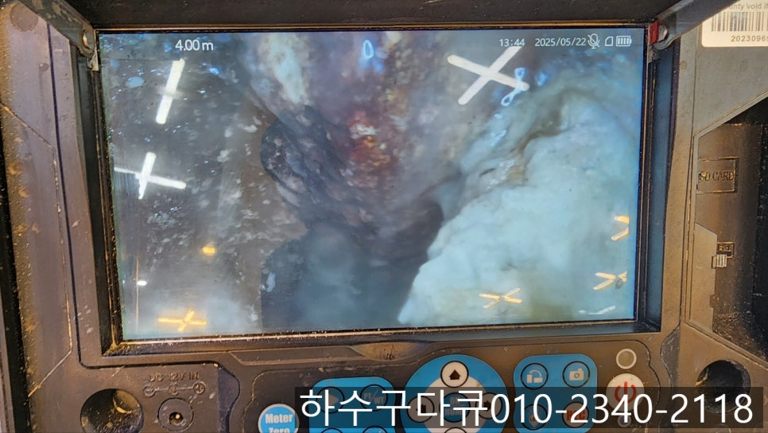
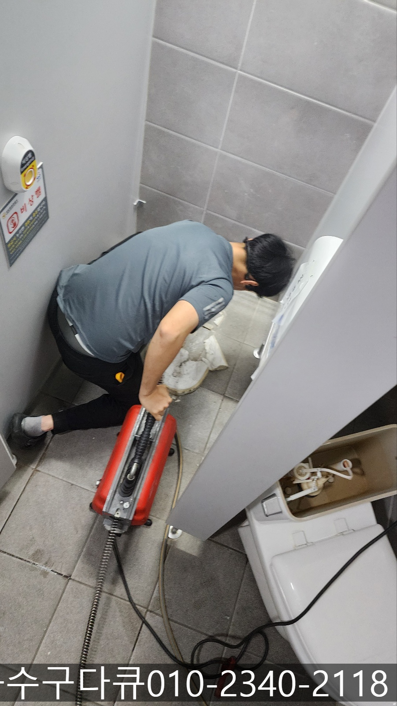
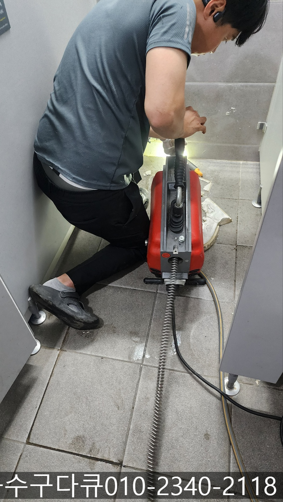

🏠 해양동 화장실 역류 안산 대부동 상가주택 하수구 막힘 뚫어주는 설비업체
안산 해양동 변기막힘 전문 시공 후기

📋 작업 개요
- 위치: 안산 해양동, 해양동, 안산
- 서비스 유형: 변기막힘, 하수구막힘, 배관막힘, 누수수리, 역류해결, 뚫는업체, 배관청소, 고압세척
- 작업 일시: 2025. 5. 28. 19:30
- 업체명: 하수구수사대 (010-5615-2118)
🔍 문제 상황
안녕하세요.
해양동 화장실 역류, 안산 대부동 상가주택 하수구 막힘 뚫어주는 설비 업체 하수구 다큐입니다.
상가주택의 경우 1층에는 매장, 2층 이상에는 주거 공간이 결합된 형태인데요.
상업시설과 주택이 함께 공존하는 구조입니다.
이런 건물에서는 각 가정이나 매장에서 사용하는 하수구 배관이 하나로 연결되는 경우가 많아 가정에서 해양동 화장실 역류가 발생하는 경우 1층 상가로 문제가 이어질 수 있어 항상 신경 써야 해요.
특히 상가 주택의 2층 화장실 또는 변기에서 하수구 막힘이 발생하게 되면, 1층 매장의 천장으로 누수, 악취 등이 발생할 수 있습니다.
이는 단순하게 배관의 막힘 문제를 넘어 매장 운영에도 영향을 미칠 수 있기 때문에 문제가 발생하면 신속하게 해결해야 해요.
특히 화장실 바닥과 변기 배수는 서로 연결된 경우가 많다 보니 동시에 막히는 경우가 빈번한데요.

🔎 원인 분석
💡 전문가 진단: 정밀 진단 장비를 사용하여 슬러지의 고착 여부를 판명하고 타격/세척 작업을 실시했습니다.
💡 전문가 진단: 정밀 진단 장비를 사용하여 슬러지의 고착 여부를 판명하고 타격/세척 작업을 실시했습니다.
예를 들면 변기에서 물이 잘 내려가지 않으면서, 동시에 샤워 후 바닥 배수구에서 물이 천천히 빠지는 경우예요.
이는 단순한 막힘이 아니라 공용 배관의 문제 일수 있기 때문에 정확한 원인을 파악해 신속하게 해결해야 합니다.
오늘은 변기와 화장실 바닥 막힘의 원인을 각각 알아보고 해양동 화장실 역류로 안산 대부동 상가주택 하수구 막힘 뚫어주는 설비 업체 하수구 다큐가 해결하고 온 현장을 소개해 드릴게요.
변기 막힘의 원인
물티슈 사용
물에 잘 녹지 않는 재질의 휴지나 물티슈를 사용 후 변기에 버리게 되면 물은 내려가지만 내부에 쌓이면서 배관을 막게 됩니다.
2. 이물질 투입
생리대나 담배꽁초, 음식물 등을 변기에 넣고 물을 내리면 그 당시에는 내려가지만 배관 내부에 쌓이면서 막힘이 발생하게 됩니다.

🔧 작업 과정
화장실 바닥 배수구 막힘의 원인
머리카락, 비누 찌꺼기
머리를 감거나 샤워를 하면서 빠지는 머리카락이나 씻을 때 사용한 비누 찌꺼기가 배관 내부로 들어가 쌓이면서 물의 흐름을 방해하게 됩니다.
2. 트랩의 고장
트랩을 오래 사용하게 되고 청소를 하지 않게 되면 트랩 안쪽에 이물질이 쌓여 막힘이 발생할 수 있습니다.
오늘 소개해 드릴 현장은 상가주택 2층에 위치한 가정집에서 해양동 화장실 역류로 연락을 주셨습니다.
필요한 장비를 챙겨 현장에 도착한 하수구 막힘 뚫어주는 설비 업체 하수구 다큐는 내시경 카메라를 이용해 변기와 연결되어 있는 하수구를 확인해 보기로 했어요.
내시경 카메라가 진입하자 이물질로 인해 꽉 막힌 것을 확인할 수 있었습니다.
처음에는 변기를 탈거하지 않고 뚫어보기 위해 내시경 카메라로 확인하며 작업을 진행했지만 해결이 되지 않아 고객님께 설명해 드린 다음 변기를 탈거 하고 배관 청소를 진행하기로 했어요.
변기를 탈거하고 전동 스프링을 이용해 작업을 진행했는데 깊숙한 부분에 이물질이 쌓여있어 제대로 뚫리지 않았습니다.
1층 슈퍼로 내려가 양해를 구하고 천장에서 작업을 진행하기로 했어요.
천장 작업 역시 내시경 카메라를 이용해 이물질의 위치를 파악하고 플렉스 샤프트 장비를 사용해 기름 슬러지와 각종 이물질을 제거하기로 했습니다.
사다리를 타고 올라가 천장에서 작업하는 일이 쉽지는 않았지만 정확히 막힌 부분이 파악되어 신나게 작업을 계속해 나갔어요.


✅ 작업 완료
플렉스 샤프트 장비를 사용해 반복해서 작업을 진행하자 이물질이 사라지고 깨끗해진 배관 내부를 확인할 수 있었습니다.
마지막으로 탈거했던 변기는 다시 원상복구해놓은 다음 작업을 마무리할 수 있었습니다.
지금 화장실 하수구 막힘으로 고민하시면서 업체 선정을 고민하고 계신가요?
다양한 현장 경험이 많은 하수구 다큐와 함께 해결해보세요.




⚠️ 베란다 누수 및 방수 관리 방법
- ✅ 비가 많이 올 때 창틀 주변이나 아래층 천장에 얼룩이 생기는지 정기적으로 확인해 보세요.
- ✅ 우수관 주변 실리콘 마감이 들뜨거나 깨진 틈새가 있는지 손상 여부를 수시로 체크하세요.
- ✅ 베란다 바닥 타일의 줄눈(메지)이 소실되면 그 틈으로 물이 침투하여 누수가 유발됩니다.
- ✅ 누수 의심 증상 발견 시 방치하면 아래층 손실이 커지므로 즉시 전문가의 진단을 받으십시오.
💡 핵심 정리
- 확실한 장비 작업(내시경 점검 및 샤프트 스케일링)으로 원인을 뿌리 뽑습니다.
- 작업 후 1년 이내에 동일한 부위 재발 시 100% 무상 A/S 서비스를 보장합니다.
- 서울 · 경기 · 인천 전 지역에 24시간 언제든 긴급 출동할 수 있도록 항시 대기 중입니다.
❓ 자주 묻는 질문 (FAQ)
🚨 안산 해양동 변기막힘 문제로 고민이신가요?
정확한 원인 진단과 확실한 시공으로 재발 없는 해결을 약속드립니다.
24시간 긴급 출동 | 서울 · 경기 · 인천 전지역 | 1년 내 재발 시 무상 A/S